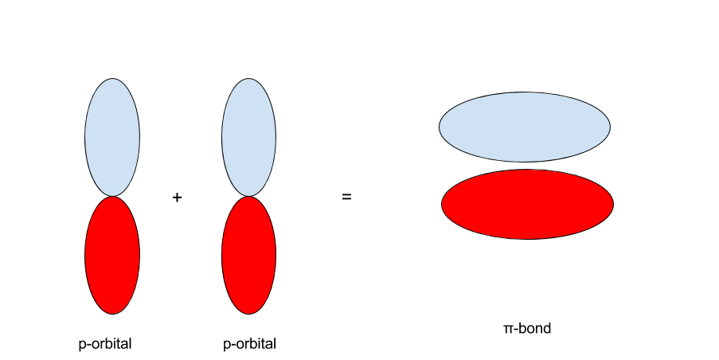

Molecular Orbital (MO) Theory is the final theory pertaining to the bonding between molecules. In contrast to VSEPR and valence bond theory which describe bonding in terms of atomic orbitals, molecular orbital theory visualizes bonding in relation to molecular orbitals, which are orbitals that surround the entire molecule. The purpose of MO theory is to fill in the gap for some behavior that cannot be explained by VSEPR and Valence-Bond Theory. Unfortunately, MO Theory is the most difficult to understand and visualize, which makes it less convenient than the other two.
As we mentioned in earlier posts, the way we determined the shape of orbitals is through Schrodinger's wave equation. It turns out that, according to the wave equation, orbitals can be one of two states. These states are often written as `+` and `-`, or drawn as different colors. For example, the p-orbitals are usually drawn with the two regions as different colors. We'll call this the "sign" of the orbital.

s-orbitals are usually written as having one of two colors. What happens when s-orbitals interact? There are two possibilities: the first of which being that two s-orbitals of the same side interact, and the second of which being that s-orbitals of the opposite sign interact. The results of these two are shown in the images below:
In MO theory, when two orbitals interact, they form a set of molecular orbitals. When two s-orbitals of the same sign interact, they form a `sigma"-bonding"` orbital. When two s-orbitals of the opposite sign interact, they form a `sigma"-antibonding"` orbital. Whenever two orbitals interact to form molecular orbitals, they form a set of two molecular orbitals: one bonding orbital and one antibonding orbital. This ties into the earlier concept that the number of orbitals must remain conserved.
The same principle applies to the p-orbitals. With two p-orbitals along the same orientation, there are two possibilities. The first is that the p-orbitals interact such that the red regions interact with the red and the blue with the blue. The second is that the red interacts with the blue and the blue with the red.
When p-orbitals with the same sign and orientation interact, they form a `pi`-bond:
On the other hand, when the p-orbitals are oriented with opposite signs, they form a `pi^"*"`- bond, pronounced as "`pi`-antibonding."
The proper notation is that molecular orbitals are written just by the kind of bond that the orbital creates. An anti-bonding orbital is written as the bond with the star superscripted onto it. For example:
`sigma`-bonding = `sigma`
`sigma`-anti-bonding = `sigma^"*"`
`pi`-bonding = `pi`
`pi`-anti-bonding = `pi^"*"`
MO theory explains when single and double bonds will be formed. A `sigma"-bond"` corresponds to a single bond and a `pi"-bond"` corresponds to a double bond. This explains where double bonds come from: double bonds are formed through electrons in the p-orbital. This means that single bonds are formed through s-orbitals whereas double bonds are formed from p-orbitals. In a triple bond for example, the first bond comes from the s-orbital, the second from the p-orbitals, and the third also from the p-orbitals.
The concept of an anti-bonding orbital is new. In MO theory, electrons in bonding orbitals promote bonding whereas electrons in anti-bonding orbitals weaken bonds. We'll see the application of this when we go over MO diagrams later in this post.
There's a lot of information in this section that probably didn't make sense. After all, MO theory is one of the most complicated sections covered in general chemistry. I recommend reading it over a few times until the following concepts are understood:
1. When two atomic orbitals interact, they form a bonding orbital and an anti-bonding orbital.
2. Electrons in bonding orbitals will strengthen the bonds of the molecule. Electrons in an anti-bonding orbital will weaken the bonds of the molecule.
3. Single bonds come from electrons in s-orbitals. Any additional bonds come from electrons in p-orbitals.
In this section, we're going to learn how to draw and utilize MO diagrams. MO diagrams allow us to determine various properties that cannot be determined via. VSEPR.
MO diagrams look like this:
They're not as intimidating as they may seem. For now, we're only covering homonuclear MO diagrams which involve the diatomic molecules composed of the same element. The elements we're covering will be the ones in period 2, from `Li` to `F`. There are two MO diagrams we need to learn for these elements. The first is for all molecules except for `O_2` and `F_2`. The second is for only `O_2` and `F_2`.
The diagram for all molecules except for `O_2` and `F_2` is the following:
The diagram for only `O_2` and `F_2` is here:
Do you notice the difference? In the diagram for `O_2` and `F_2`, the `sigma_("2p")` and `pi_("2p")` are reversed. This very slight difference becomes profoundly important when it comes to the behavior of `O_2` and `F_2`.
Now let's learn how to fill out the diagrams. We can break it down into several smaller steps.
1. Determine the total number of valence electrons.
The molecules we'll be dealing with in MO diagrams are all homonuclear moleculars e.g `B_2`, `O_2`, etc. The total number of valence electrons is twice the number that the atomic species would have, since there are now two of the atoms in the molecule.
For example, `O` has `6` valence electrons. `O_2` is comprised of two `O` atoms, so it has `2(6)=12` valence electrons.
2. Determine the number of electrons in the `s` and `p` orbitals.
Recall that in the `n=2` energy level, there is 1 s-orbital and 3 p-orbitals. For any molecule, determine the number of electrons in both the s and p-orbitals.
For example, `B` has `2` electrons in the `2s` orbital and `1` electron in the `2p` orbitals. `F` has `2` electrons in the `2s` energy level and `5` in the `2p` orbitals. This is an application of electron configuration; if this is unfamiliar, check out this post:
3. Fill in the electrons into the molecular orbitals in the correct MO diagram.
Make sure you're using the correct MO diagram! When filling in molecular orbitals, all of the principles for filling in orbitals (Hund's Rule, Pauli Exclusion Principle, Aufbau Principle), still apply! Here's how they apply:
1. Pauli Exclusion Principle: each molecular orbital can accomodate two electrons.
2. Aufbau Principle: electrons will always fill the orbitals from bottom to top. This means that we always start with the `2s` orbitals and fill upward.
3. Hund's Rule: orbitals on the same energy level will fill singly before doubly. This applies primarily to the `pi` and `pi^"*"` orbitals, where one electron will go into each orbital before filling in the second.
Just like with electron configuration, MO diagrams will always fill the same way! Once you understand the general pattern, none of the MO diagrams covered should be a problem.
In summary: fill in the orbitals from the bottom up. Each orbital can hold two electrons, so orbitals lower should always fill up before the orbitals higher up are filled. In the case of the two `pi` orbitals, one electron goes into each orbital before two go into either. The MO diagram is complete when all of the valence electrons are used.
Let's demonstrate these principles with a couple problems.
#1. Draw the MO diagram for `B_2`.
First step is to determine which MO diagram we're using. In this case, we're using the standard one.
Draw out the MO diagram and label in the valence electrons. Boron has 2 electrons in the `2s` orbitals and 1 electron in the `2p` orbital.
That's it for the MO diagram of `B_2`! To check, count how many electrons there are in total. `B_2` has `2(3)=6` valence electrons. The MO diagram has `6` electrons as well. Notice that the last two electrons go into two separate `pi` orbitals instead of filling 2 electrons into one orbital. This is in accordance to Hund's Rule.
#2. Draw the MO diagram for `O_2`
Since we're doing the MO diagram for `O_2`, we have to use the `O_2` MO diagram which features flipped `pi_"2p"` and `sigma_"2p"` orbitals. Fill out the valence electrons.
Now, fill in the electrons from the bottom up. `2` electrons go into the `sigma_"2s"`, `2` into the `sigma_"2s"^"*"`, `2` into the `sigma_"2p"`, `4` into the `pi_"2p"`, and `2` into the `pi_"2p"^"*"`. The resulting diagram should look like this.
#3. Draw the MO diagram for `O_2^+`
This is a bit of a curveball, but a perfectly valid problem. Recall that a cation indicates a loss of `1` electron. `O_2^+` is just the ionized form of `O_2`; that is, it's `O_2` with `1` missing electron.
The MO diagram will be the same as the MO diagram of `O_2`, except with `1` less electron. You can either draw the `O_2` diagram and remove `1` electron, or just draw the `O_2^+` diagram. The diagram will end up as such:
Notice the effect that this has on the overall bonds. Recall from earlier that electrons in bonding orbitals will stregnthen bonds whereas electrons in antibonding orbitals will weaken bonds. By removing an electron from an antibonding orbital, the `O-O` bond is actually getting stronger! This brings us to the concept of the bond order.
We can now expand on the concept of the bond order. In an earlier section, we learned that the bond order is defined as such:
`"Bond Order"=("Number of Bonds")/("Number of Bonded Groups")`
The bond order tells us the average number of bonds between the bonded atoms. In a diatomic molecule such as `O_2`, the bond order simply tells the number of bonds between the two atoms.
The bond order can be interpreted from MO diagrams using the following formula:
`"Bond Order" = 1/2 [("Bonding "e^-)-("Antibonding " e^-)]`
The two formulas for bond order tell us the same information. The value in the bond order from MO diagrams is that we can now determine the number of bonds in between atoms that we otherwise would not be able to.
For example, here are the MO diagrams for `"Ne"_2` and `O_2^-`. We know that `"Ne"_2` should not exist seeing as `"Ne"` is a noble gas. What can we say about `O_2^-`?
Apologies for the binder paper, I ran out of printer paper.
Let's calculate the bond order of `"Ne"_2`. There are `8` electrons in bonding orbitals and `8` electrons in antibonding orbitals. The bond order is therefore:
`BO=1/2 (8-8)=0`
This is in line with how we expect noble gases to behave! What about `O_2^-`?
`BO=1/2(8-5)=3/2`
Normal `O_2` has a bond order of 2. This means that, going from `O_2` to `O_2^-`, the bonds between the `O` atoms weakens! If we ionize `O_2` into `O_2^+`, the bond order becomes `1/2 (8-3)=5/2` , which means that the bonds are becoming stronger!
With MO diagrams, we can predict the number of bonds in diatomic molecules. For example, here's the MO diagram for `N_2`. We know from the Lewis structure that `N_2` has a triple bond. This means that the bond order of `N_2` should be `3`.
The bond order is calculated as follows:
`BO=1/2 (8-2)=3`
This is exactly what we expected!
The magnetic properties of a molecule can be determinekd through the molecule's MO diagram. Magnetism results from unpaired electrons.
If we draw out `O_2`'s Lewis dot structure, we'll find no unpaired electrons:
However, from experiments we know that `O_2` gas is actually magnetic. We can see that in the following .gif. When oxygen gas is poured in between two magnets, the gas is attracted to the magnets.

Why is it that, if magnetism results from unpaired electrons, that `O_2` is magnetic? To answer this, we simply have to examine the MO diagram of `O_2`.
In the `pi^"*"` orbitals, the two electrons are unpaired. This is why `O_2` is magnetic!
We can classify magnetic properties into two different categories:
1. Paramagnetic: when unpaired electrons exist.
2. Diamagnetic: no unpaired electrons exist.
From these definitions, we can classify `O_(2(g))` as having paramagnetic behavior. Diamagnetic molecules are molecules that exhibit no magnetic properties due to the lack of unpaired electrons. `N_2` gas, for example, is diamagnetic.
According to MO theory, when two atomic orbitals interact, they form one bonding orbital and one antibonding orbital.
Electrons in bonding orbitals strengthen bonds whereas electrons in antibonding orbitals weaken bonds.
`sigma` - bonds are formed through the interaction of s-orbitals. `sigma` - bonds are equivalent to single bonds.
`pi` - bonds are formed through interaction of p-orbitals. `pi` - bonds are equivalent to double bonds.
Whenever a multiple bond (double, triple) exists, the first bond is a `sigma` - bond and the rest are `pi` - bonds. For example, a double bond consists of `1 sigma`- bond and `1 pi` - bond. A triple bond consists of `1 sigma` - bond and `2 pi` - bonds.
MO diagrams allow us to view the specific configuration of valence electrons in their molecular orbitals.
Magnetism is a phenomena due to unpaired electrons. Species with unpaired electrons are paramagnetic whereas species with all electrons paired are diamagnetic.
1. Color of organic compounds
The color of organic compounds comes from their conjugated systems. A conjugated system is a system in which the bonds alternate from single to double to single. For example:

The existence of alternating double bonds creates many `pi` and `pi^"*"` orbitals. Recall that, when atoms absorb energy, they absorb a specific wavelength of energy. In conjugated systems, the amount of energy absorbed corresponds to the `pi` to `pi^"*"` transition. This is the same concept of emission from `n=4` to `n=1` energy levels.
This is the color that arises from organic paints or, if you use fountain pens, fountain pen inks. The reason that organic paints don't last long, however, is that overtime the double bonds go away due to reactions with the moisture in air. The removal of this double bond removes the `pi` to `pi^"*"` transition, which removes the color.
Fun fact within a fun fact: this is what bleach does. The reason bleach removes color is that it removes double bonds, thereby eliminating the `pi` to `pi^"*"` transition.
2. What is special about `F_2` and `O_2` that they warrant a new MO diagram?
The answer to this question requires more understanding of orbital behavior than we previously have. The short and simple (perhaps unsatisfying) answer is that `F_2` and `O_2` are so electronegative that they "pull" the `sigma_"2p"` orbital closer to them. This will be a question we answer later in inorganic chemistry, so keep an eye out until then.